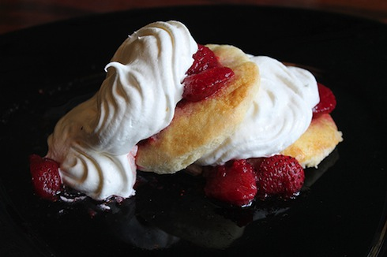

Home
Strawberry Shortcake

Descripción
Strawberry shortcake es un postre delicioso para esta temporada. En EEUU lo hacemos mucho para nuestras barbacoas y eventos especiales como el día de la madre o el día del padre. Lo bueno del Strawberry Shortcake es que puede ser un postre rápido, simple, y no demasiado bonito o con un poco de creatividad puede ser un postre muy vistoso, que se serviría para bodas y eventos de lujo.
Esta receta de Strawberry Shortcake es simple, pero os aseguro que es adictivo. Obviamente es mejor cuando las fresas son frescas y jugosas si no son buenas no lo hagas!
Ingredientes
- Para las fresas y la nata:
- 24 fresones
- 100 g (1/2 taza) de azúcar
- Nata para montar
- Extracto de vainilla
- Para los biscuits (la receta hará 9 biscuits)
- 360 g (3 tazas) de harina de trigo
- 40 g (3 cucharadas) de azúcar
- 25 g (1.5 cucharadas) de levadura en polvo
- 3/4 cucharaditas de sal
- 180 g (12 cucharadas) de mantequilla sin sal, fria y cortada en pedacitos
- 350 ml (1.5 tazas) de nata para montar
- 7.5 ml (1.5 cucharaditas) de extracto de vainilla
Pasos
- Para los biscuits:
- Tamizamos la harina de trigo, el azúcar, la levadura en polvo, y la sal en un bol grande. Batimos hasta que quede todo homólogo.
- Añadimos la mantequilla (fría), ya cortada en daditos. Usando un “pastry blender” o un tenedor, combinamos la mantequilla y la harina hasta que tenga aspecto de guistantes pequeños.
- Combinamos la nata y la vainilla en una taza y hacemos un hueco en el centro de la harina.
- Vertemos la nata/vainilla en el hueco y mezclamos solo hasta que todo quede húmedo y unido (no mezcles más!). Todavía aparecerá un poco seco.
- Amasamos la masa un poco con las manos (5-6 veces), debe quedar como una pelota pequeña.
- Enharinar ligeramente una superficie y estirar la masa hasta obtener un grosor de unos 2.5 cm.
- Transfirimos la masa a una bandeja del horno cubierto con papel del horno o silpat. La cubrimos con plástico y la dejamos 20 minutos en el frigorifico.
- Precalentamos el horno a 218° C (425°F)
- Quitamos la masa del frigorífico y la cortamos en 9 cuadros iguales. Las colocamos en una bandeja del horno con al menos 3 cm entre cada uno.
- Las horneamos hasta que queden dorados, unos 15-20 minutos.
- Para la Fresas y la Nata
- Lavamos las fresas, las quitamos el rabillo y las cortamos en laminas.
- En un bol grande, añadimos las fresas en laminas y 1/4 taza (50g) de azúcar y mezclamos bien.
- Dejamos que las fresas descansen a temperatura de ambiente para unos 20 minutos y después machacamos un poco las fresas con un tenedor.
- Montamos la nata, añadiendo una gotita de extracto de vainilla y una cucharadita de azúcar.
- Para Servir
- Para servir el Strawberry Shortcake, toma medio biscuit (los abrimos por la mitad) y los cubrimos con las fresas y después con la nata montada.